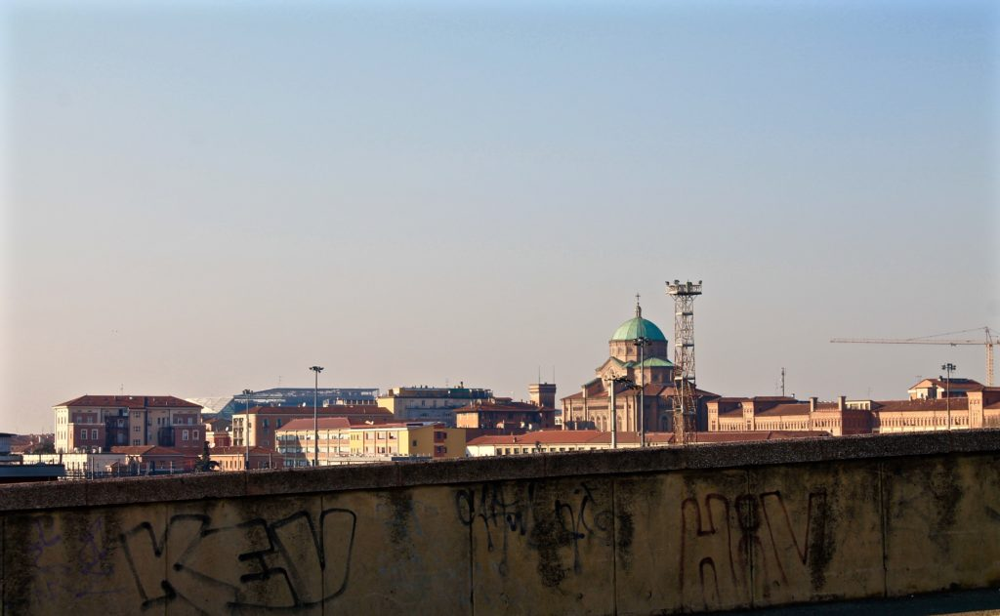
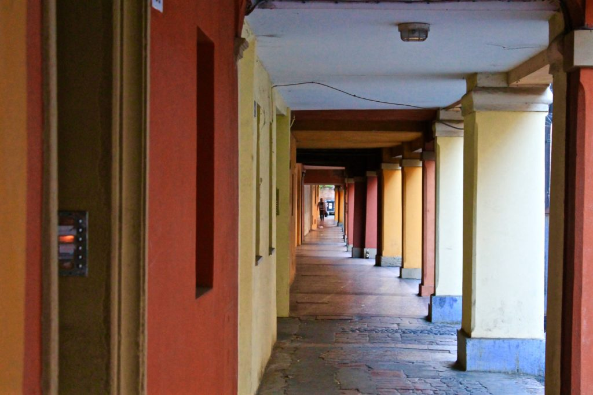

Social Housing
Il social housing è uno dei tentativi promossi dalle istituzioni per arginare il progressivo aumento del disagio abitativo e si rivolge a quelle persone che si trovano nella così detta fascia grigia, ovvero coloro che sono esclusi per ragioni di reddito dall'accesso all'edilizia residenziale pubblica, ma tuttavia non sono in grado di sostenere i costi del libero mercato.

Ma in cosa consiste il social housing?
I progetti di social housing sono legati principalmente a due aspetti: il coordinamento e la sinergia tra l'intervento pubblico e l'iniziativa privata, e il miglioramento della qualità della vita e la riqualificazione urbana. In particolare, nel primo caso si offre a privati la possibilità di accedere a fondi specifici per la realizzazione di nuove unità residenziali (case) destinate a un affitto a canone ridotto e successivamente alla vendita, mentre nel secondo caso si prevedono percorsi di inserimento e di convivenza.
Si può dire quindi che il social housing integri le misure abitative a quelle prettamente sociali.
Il social housing è stato introdotto dalla Legge Finanziaria n°244 nel 2008 e, sebbene in Italia la percentuale di alloggi in affitto sociale sia ancora molto bassa (solo il 4% dello stock abitativo è destinato ad alloggi di affitto sociale), sono presenti comunque degli esempi virtuosi di social housing che spaziano dall'Emilia-Romagna all'Umbria e dal Veneto alla Lombardia.
Nello specifico, le azioni di social housing messe in campo sul territorio bolognese consistono principalmente nelle seguenti tipologie di progetto:
- Affitto a canone calmierato: si intende un affitto che non superi il 20-30% dello stipendio. A questa soluzione possono accedere i cittadini italiani, coloro che hanno la cittadinanza di stato aderente all'Unione Europea o che possiedono il permesso di soggiorno con attività lavorativa nel Comune di Bologna.
- Co-housing e auto-costruzione: il cohousing introduce un nuovo concetto di abitare, in cui si creano dei momenti di socialità tra gli inquilini. Più precisamente, si parla di cohousing quando un condominio è caratterizzato da singole abitazioni private, ma allo stesso tempo prevede la condivisione di alcuni spazi, valori, tempi e servizi, per esempio: cucina in comune, laboratori, orti comunitari, angoli per bambini, car sharing.
Un esempio di cohousing sviluppato nella città di Bologna è quello di via del Porto, in cui è stato destinato un immobile di proprietà dell'ASP IRIDES ai giovani di età inferiore ai 35 anni.
Si parla invece di auto-costruzione quando i beneficiari degli interventi abitativi sono anche coloro che costruiscono la propria casa. Generalmente i progetti di auto-costruzione vengono realizzati attraverso un partenariato tra pubblico e privato che svolge un lavoro di assistenza attraverso la selezione dei beneficiari, ma anche tramite l'assistenza tecnica e finanziaria, come per esempio la ricerca dell'istituto bancario che dovrà mettere a disposizione il credito per realizzare l'intervento. - Agevolazioni finanziarie che consistono in finanziamenti a fondo perduto o in soluzioni più articolate. Nel Comune di Bologna si sono principalmente tradotte nelle seguenti azioni:
- AMA - Agenzia metropolitana per l'affitto: AMA si pone l'obiettivo di fare incontrare la domanda e l'offerta di alloggi in affitto proponendo il canone concordato come strumento redditizio, equo e vantaggioso sia per i proprietari che per gli inquilini. Gli inquilini a reddito intermedio, selezionati mediante apposite graduatorie dalle amministrazioni comunali aderenti al progetto, possono trovare un alloggio a canoni inferiori rispetto a quelli applicati in regime di libero mercato. I proprietari di immobili privati possono affittare in tutta tranquillità il proprio alloggio, minimizzando i rischi grazie ad un fondo di garanzia per la copertura della morosità per un periodo di 6 mesi. Inoltre, la Regione Emilia-Romagna ha deciso di sostenere economicamente le agenzie per la locazione costituite a livello provinciale, nella convinzione che rappresentino uno strumento efficace per calmierare il mercato immobiliare con effetti benefici per tutta la collettività.
- Micro credito per la casa: il Comune di Bologna, in collaborazione con ASP Città di Bologna, AUSER ed EmilBanca, ha istituito una misura di sostegno alle famiglie che si trovano in una condizione momentanea di difficoltà per ottenere un prestito a condizioni agevolate e un accompagnamento nella gestione del bilancio familiare. Il prestito varia da 500 euro ad un massimo di 5.000 euro da restituire con rate mensili fino a 48 mesi.
- Bando giovani coppie per l'acquisto della prima casa: consiste in un contributo regionale dall'importo massimo di 30.000,00 euro per i residenti nel Comune di Bologna, nello specifico: giovani coppie, nuclei monoparentali, nuclei numerosi o assegnatari di alloggi ERP per i quali è stata dichiarata la decadenza per superamento dei limiti di reddito. L'alloggio viene messo a disposizione da parte di operatori economici privati e, una volta scelto, deve essere acquistato entro 4 anni, durata prevista per la locazione.
- Bonus utenze: in questo ambito rientrano il "bonus elettrico" che garantisce alle famiglie numerose o in difficoltà economiche un risparmio sulla spesa per l'energia elettrica di circa il 20%, il "bonus gas" grazie al quale è possibile avere una riduzione sulle bollette, il "bonus acqua"che prevede un contributo di 60 0 40 euro in base al reddito, e infine particolari agevolazioni per i servizi di telefonia e Internet.

Non sono forse queste le soluzioni in cui si dovrebbe investire per fornire risposte ai bisogni abitativi delle famiglie bolognesi e italiane? Siamo convinte che il connubio tra pubblico, privato e Terzo settore possa essere la risposta al disagio abitativo, considerato soprattutto il momento storico e la tanto menzionata insufficienza di fondi in favore dell'edilizia residenziale pubblica. Affinché questo accada sono necessari però non solo volontà e nuove idee da parte di tutti gli attori coinvolti, ma anche un forte coordinamento e una progettazione più efficiente.
La strada sembra ancora lunga e complicata...